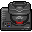
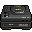
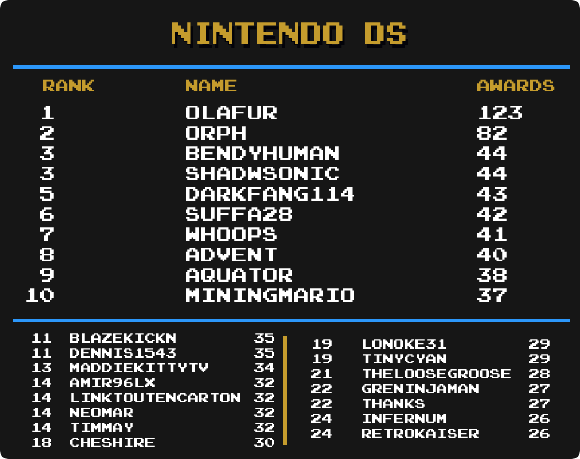

Top Masteries
 By
Amir96lx
By
Amir96lx
Contents
- Intro
- Current Champions
- Notable Milestones
-
Category Rankings
- Total Awards
- Total Awards (Excluding Hacks)
- Event Awards
- Site Awards
- Hack Awards
- Homebrew Awards
- Subset Awards
- Amstrad CPC
- Apple II
- Arcade
- Arcadia 2001
- Arduboy
- Atari 2600
- Atari Jaguar CD
- Dreamcast
- Elektor TV Games Computer
- Fairchild Channel F
- Game Boy
- Game Boy Advance
- Game Boy Color
- Game Gear
- Interton VC 4000
- Master System
- Mega Drive
- Mega Duck
- Nintendo 64
- NES
- Nintendo DS
- Nintendo DSi
- PC Engine
- PC Engine CD
- PC-8000/8800
- PlayStation
- PlayStation 2
- PlayStation Portable
- Pokémon Mini
- Sega Saturn
- Sega CD
- SG-1000
- SNES
- Uzebox
- Virtual Boy
- WASM-4
- Watara Supervision
Intro
We are going to take a look at another metric for greatness, Mastery Awards. Mastery awards are given to users when they complete every achievement for a given set in hardcore mode. Users wear mastery awards as a badge of honor on their profile page representing all the hard work they put into truly becoming a master of the game.
Below we will take a look at which users rank among the best with the most mastery awards in several categories well as notable updates from the previous month to each individual category. Check to see how you rank among the rest of the community members.
Special thanks to  Nydaxn for creating the ranking image templates.
Nydaxn for creating the ranking image templates.
* Data as of February 1st 2023.
Current Champions
|
|
|
Mastery Awards | |
|---|---|---|---|
 Total Awards
|  Infernum Infernum | 1348 | |
| Event Awards
|  Hotscrock Hotscrock | 30 | |
| Site Awards
|
 Snow Snow televandalist televandalist
| 28 | |
| Hacks
|  HolyShinx HolyShinx | 276 | |
| Homebrews
|  AuburnRDM AuburnRDM | 234 | |
| Subsets
|
 Blazekickn Blazekickn GreninjaMan GreninjaMan
|
27 | |
 3DO Interactive Multiplayer
|
 Vyach59 Vyach59 | 13 | |
 Amstrad CPC
|  roukanumachi roukanumachi | 15 | |
 Apple II
|  Sylrifaide Sylrifaide | 35 | |
Arcade
|  LordBBH LordBBH | 82 | |
 Arcadia 2001
|  Maximdraco Maximdraco | 27 | |
 Arduboy
| Infernum | 48 | |
 Atari 2600
|  PMniac PMniac | 125 | |
 Atari 7800
| PMniac | 21 | |
 Atari Jaguar
| PMniac | 12 | |
 Atari Jaguar CD
|  sludgemastic sludgemastic | 9 | |
 Atari Lynx
|
 guineu guineu Jungon Infernum Jungon Infernum
| 8 | |
 ColecoVision
| PMniac | 24 | |
 Dreamcast
|  ChrisGold97 ChrisGold97 | 22 | |
 Elektor TV Games Computer
| sludgemastic | 22 | |
 Fairchild Channel F
| Maximdraco | 31 | |
 Game Boy
|  Shootzy Shootzy | 149 | |
 Game Boy Advance
|  bonecrusher1022 bonecrusher1022 | 175 | |
 Game Boy Color
|  valeforge valeforge | 121 | |
 Game Gear
| Nydaxn | 91 | |
 Intellivision
| Jungon | 23 | |
 Interton VC 4000
|  DrunkenSuperman DrunkenSuperman | 24 | |
 Magnavox Odyssey 2
| Maximdraco | 21 | |
 Master System
| Jungon | 103 | |
 Mega Drive
|  DUT DUT | 140 | |
 Mega Duck
|  AzuchiAkeshi AzuchiAkeshi | 12 | |
 MSX
| guineu | 14 | |
 Nintendo 64
|  SlashTangent SlashTangent | 44 | |
Neo Geo CD
|  Tyiiop Tyiiop | 6 | |
 Neo Geo Pocket
|  MelodyAsh MelodyAsh | 16 | |
 NES
|  mx01 mx01 | 256 | |
 Nintendo DS
|  Olafur Olafur | 123 | |
 Nintendo DSi
|  MiningMario MiningMario | 31 | |
 PC Engine
| Infernum | 38 | |
 PC Engine CD
|
 Annonith Infernum Annonith Infernum
| 10 | |
 PC-8000/8800
|  Orph Orph | 15 | |
 PC-FX
|  Nanashi Nanashi | 12 | |
 PlayStation
|  FBiDev FBiDev | 118 | |
 PlayStation 2
| Infernum | 71 | |
 PlayStation Portable
|  Waishler Waishler | 59 | |
 Pokémon Mini
| Sylrifaide | 37 | |
 Sega 32X
| DUT | 6 | |
 Sega Saturn
| Orph | 16 | |
 Sega CD
|  Drakub Drakub | 19 | |
 SG-1000
|
Jungon PMniac
| 60 | |
 SNES
|  danibodom danibodom | 232 | |
 Uzebox
|  Dominick Dominick | 21 | |
 Vectrex
| Jungon | 14 | |
 Virtual Boy
|
Jungon Grahamtams Grahamtams
| 18 | |
 WASM-4
| Amir96lx | 54 | |
 Watara Supervision
|  Sarconius Sarconius | 52 | |
 WonderSwan
|  GregHouse007 GregHouse007 | 8 |
Notable Milestones
900 Mastery Awards
| Amir96lx |
800 Mastery Awards
 NEOMAR NEOMAR |
500 Mastery Awards
 Sutarion Sutarion |
 Retrokaiser Retrokaiser |
 BrothersGames BrothersGames |
 Advent Advent |
400 Mastery Awards
| Sylrifaide |
 pitapocket17 pitapocket17 |
Maximdraco |
 MarioKness MarioKness |
 FabricioPrie FabricioPrie |
 ChocoMilk ChocoMilk |
 BahamutVoid BahamutVoid |
300 Mastery Awards
 Griffin Griffin |
 chocolatiel chocolatiel |
200 Mastery Awards
 Zouiguipopo Zouiguipopo |
 TneraOgeid TneraOgeid |
 tmap tmap |
 TheRoadkill TheRoadkill |
 theelkspeaks theelkspeaks |
 TheClassicOne88 TheClassicOne88 |
 Tayadaoc Tayadaoc |
 SporyTike SporyTike |
 s0uth s0uth |
 Piccolo Piccolo |
 MonkeyBug MonkeyBug |
 Mindhral Mindhral |
 MarceloSSR MarceloSSR |
 KnockerKrazy KnockerKrazy |
Hotscrock |
 Dododo Dododo |
 Calsun Calsun |
 AmericanNinja AmericanNinja |
100 Mastery Awards
 Wookash
Wookash vascocaetano345
vascocaetano345 TrashCity
TrashCity thundere
thundere TheGamingYoshi
TheGamingYoshi TheAndySocialNetwork
TheAndySocialNetwork StarrlightSims
StarrlightSims soundogg
soundogg Sevenlovelywaifu
Sevenlovelywaifu popoki
popoki Nivek0402
Nivek0402 MotoKong
MotoKong MasamuneNKX
MasamuneNKX LETSPLAYmarkus
LETSPLAYmarkus LeoMiguel
LeoMiguel L4stMinuteHero
L4stMinuteHero KuMis
KuMis HardcoreAchievements
HardcoreAchievements GUGA0x3
GUGA0x3 Griller80
Griller80 GaudySlayers
GaudySlayers evansfm428
evansfm428 DustinRomero1268
DustinRomero1268 Darkfang114
Darkfang114 Biendeo
Biendeo atvdriver
atvdriver Appotheozz
AppotheozzCategory Rankings
Total Awards
-
Infernum remains in 1st with 1348 total mastery awards.
-
 Lonoke31 has moved up 1 spot and is in 6th place.
Lonoke31 has moved up 1 spot and is in 6th place. -
NEOMAR has moved up 2 spots and is in 8th place.
-
 Whoops has moved up 2 spots and is in 15th place.
Whoops has moved up 2 spots and is in 15th place. -
MiningMario has moved up 2 spots and is in 22nd place.
-
BrothersGames has moved up 1 spot and is in 24th place.
-
Advent has made it into the top 25 and is in 25th place.
Total Awards (Excluding Hacks)

-
Infernum remains in 1st with 1278 total mastery awards.
-
 Andrey199650 has moved up 1 spot and is tied for 7th place.
Andrey199650 has moved up 1 spot and is tied for 7th place. -
NEOMAR has moved up 1 spot and is in 9th place.
-
Whoops has moved up 2 spots and is in 13th place.
-
MiningMario has moved up 4 spots and is in 21st place.
-
Sutarion has made it into the top 25 and is in 22nd place.
-
BrothersGames has made it into the top 25 and is in 24th place.
Event Awards
-
Hotscrock remains in 1st with 30 total mastery awards.
-
 Bendyhuman has moved up 1 spot and is tied for 5th place.
Bendyhuman has moved up 1 spot and is tied for 5th place. -
 Pudpod has moved up 1 spot and is in a 3-way tie for 8th place.
Pudpod has moved up 1 spot and is in a 3-way tie for 8th place. -
 Akai has moved up 1 spot and is tied for 11th place.
Akai has moved up 1 spot and is tied for 11th place. -
 FlamingDoom has moved up 1 spot and is in a 4-way tie for 13th place.
FlamingDoom has moved up 1 spot and is in a 4-way tie for 13th place. -
 StingX2 has moved up 11 spot and is in a 4-way tie for 13th place.
StingX2 has moved up 11 spot and is in a 4-way tie for 13th place. -
Sutarion has moved up 2 spots and is in a 4-way tie for 13th place.
-
 amine456 has moved up 3 spots and is in a 8-way tie for 17th place.
amine456 has moved up 3 spots and is in a 8-way tie for 17th place. -
Amir96lx has moved up 3 spots and is in a 8-way tie for 17th place.
-
 Doggy227 has moved up 3 spots and is in a 8-way tie for 17th place.
Doggy227 has moved up 3 spots and is in a 8-way tie for 17th place. -
NEOMAR has moved up 3 spots and is in a 8-way tie for 17th place.
-
 TheJediSonic has made it into the top 25 and is in a 8-way tie for 17th place.
TheJediSonic has made it into the top 25 and is in a 8-way tie for 17th place. -
Retrokaiser has made it into the top 25 and is tied for 25th place.
Site Awards

-
Snow has taken 1st place with 28 total mastery awards.
-
 suspect15 has moved up 1 spot and is in 5th place.
suspect15 has moved up 1 spot and is in 5th place. -
 TheMysticalOne has moved up 1 spot and is in a 4-way tie for 6th place.
TheMysticalOne has moved up 1 spot and is in a 4-way tie for 6th place. -
 Excessiveiser has moved up 1 spot and is in a 3-way tie for 10th place.
Excessiveiser has moved up 1 spot and is in a 3-way tie for 10th place. -
Hotscrock has moved up 2 spots and is in 14th place.
-
Tayadaoc has moved up 2 spots and is in a 5-way tie for 15th place.
-
 Etron has moved up 3 spots and is in a 5-way tie for 20th place.
Etron has moved up 3 spots and is in a 5-way tie for 20th place. -
 Sines has made it into the top 25 and is in a 5-way tie for 20th place.
Sines has made it into the top 25 and is in a 5-way tie for 20th place. -
 ThatAmericanSlacker has moved up 1 spot and is in a 5-way tie for 20th place.
ThatAmericanSlacker has moved up 1 spot and is in a 5-way tie for 20th place. -
Amir96lx has made it into the top 25 and is in a 4-way tie for 25th place.
Hack Awards

-
HolyShinx remains in 1st with 276 total mastery awards.
-
chocolatiel has moved up 1 spot and is in 9th place.
-
FabricioPrie has moved up 1 spot and is tied for 10th place.
-
 Jacobgharibian has moved up 2 spots and is in 12th place.
Jacobgharibian has moved up 2 spots and is in 12th place. -
Lonoke31 has moved up 2 spots and is tied for 13th place.
-
 leislonjose has moved up 2 spots and is tied for 17th place.
leislonjose has moved up 2 spots and is tied for 17th place. -
 Renan007 has moved up 1 spot and is tied for 22nd place.
Renan007 has moved up 1 spot and is tied for 22nd place. -
TheClassicOne88 has made it into the top 25 and is tied for 22nd place.
Homebrew Awards

-
AuburnRDM remains in 1st with 234 total mastery awards.
-
Amir96lx has moved up 1 spot and is in 2nd place.
-
Whoops has moved up 1 spot and is in 4th place.
-
NEOMAR has moved up 1 spot and is in 6th place.
-
MiningMario has moved up 4 spots and is in 10th place.
-
MarioKness has moved up 1 spot and is in 15th place.
-
 Timmay has moved up 3 spots and is in 17th place.
Timmay has moved up 3 spots and is in 17th place. -
 Beulu79 has moved up 1 spot and is in 24th place.
Beulu79 has moved up 1 spot and is in 24th place.
Subset Awards

-
Blazekickn remains in 1st with 27 total mastery awards.
-
 xenoriddley has moved up 3 spots and is in 10th place.
xenoriddley has moved up 3 spots and is in 10th place. -
leislonjose has moved up 1 spot and is in a 3-way tie for 11th place.
-
 adamjohnny5 has moved up 3 spots and is in a 4-way tie for 14th place.
adamjohnny5 has moved up 3 spots and is in a 4-way tie for 14th place. -
 FireSonic has made it into the top 25 and is in a 4-way tie for 14th place.
FireSonic has made it into the top 25 and is in a 4-way tie for 14th place. -
 starlite has made it into the top 25 and is in a 4-way tie for 14th place.
starlite has made it into the top 25 and is in a 4-way tie for 14th place. -
 DavidYTBR2 has moved up 2 spots and is in a 10-way tie for 18th place.
DavidYTBR2 has moved up 2 spots and is in a 10-way tie for 18th place. -
 Fretzi has moved up 2 spots and is in a 10-way tie for 18th place.
Fretzi has moved up 2 spots and is in a 10-way tie for 18th place. -
 HippopotamusRex has moved up 2 spots and is in a 10-way tie for 18th place.
HippopotamusRex has moved up 2 spots and is in a 10-way tie for 18th place. -
Lonoke31 has made it into the top 25 and is in a 10-way tie for 18th place.
-
 Nevermond12 has made it into the top 25 and is in a 10-way tie for 18th place.
Nevermond12 has made it into the top 25 and is in a 10-way tie for 18th place. -
Olafur has made it into the top 25 and is in a 10-way tie for 18th place.
Amstrad CPC

-
roukanumachi remains in 1st with 15 total mastery awards.
-
 Halbarad has moved up 6 spots and is in a 5-way tie for 12th place.
Halbarad has moved up 6 spots and is in a 5-way tie for 12th place. -
 Snapouille has made it into the top 25 and is in a 5-way tie for 12th place.
Snapouille has made it into the top 25 and is in a 5-way tie for 12th place. -
Timmay has made it into the top 25 and is in a 5-way tie for 20th place.
Apple II
-
Sylrifaide has taken 1st place with 35 total mastery awards.
-
 ruuzilla has made it into the top 25 and is in 3rd place.
ruuzilla has made it into the top 25 and is in 3rd place. -
DrunkenSuperman has moved up 5 spots and is in a 5-way tie for 7th place.
-
Infernum has moved up 5 spots and is in a 5-way tie for 7th place.
-
Timmay has moved up 5 spots and is in a 5-way tie for 12th place.
-
 xnaivx has moved up 1 spot and is in a 5-way tie for 12th place.
xnaivx has moved up 1 spot and is in a 5-way tie for 12th place. -
 ILLSeaBass has moved up 1 spot and is in a 7-way tie for 17th place.
ILLSeaBass has moved up 1 spot and is in a 7-way tie for 17th place. -
theelkspeaks has made it into the top 25 and is in a 7-way tie for 17th place.
-
 Tresxae has made it into the top 25 and is in a 7-way tie for 17th place.
Tresxae has made it into the top 25 and is in a 7-way tie for 17th place.
Arcade
-
LordBBH remains in 1st with 82 total mastery awards.
-
 scoru has made it into the top 25 and is tied for 6th place.
scoru has made it into the top 25 and is tied for 6th place. -
 Fanonos has moved up 2 spots and is in 12th place.
Fanonos has moved up 2 spots and is in 12th place. -
 AliasMcDoe has moved up 5 spots and is in a 7-way tie for 13th place.
AliasMcDoe has moved up 5 spots and is in a 7-way tie for 13th place. -
 Dazzer123456 has moved up 4 spots and is tied for 20th place.
Dazzer123456 has moved up 4 spots and is tied for 20th place.
Arcadia 2001

-
Maximdraco remains in 1st with 27 total mastery awards.
-
 Teran01 has moved up 2 spots and is in 3rd place.
Teran01 has moved up 2 spots and is in 3rd place. -
Sutarion has made it into the top 25 and is tied for 9th place.
-
Whoops has moved up 8 spots and is tied for 9th place.
-
Advent has moved up 2 spots and is in a 5-way tie for 11th place.
-
 Erodion has made it into the top 25 and is in a 8-way tie for 16th place.
Erodion has made it into the top 25 and is in a 8-way tie for 16th place. -
Jungon has made it into the top 25 and is in a 8-way tie for 16th place.
-
MiningMario has made it into the top 25 and is in a 8-way tie for 16th place.
-
 Sloppydj has made it into the top 25 and is in a 8-way tie for 16th place.
Sloppydj has made it into the top 25 and is in a 8-way tie for 16th place.
Arduboy
-
Infernum remains in 1st with 48 total mastery awards.
-
Amir96lx has moved up 1 spot and is tied for 7th place.
-
MiningMario has moved up 1 spot and is tied for 12th place.
-
Advent has moved up 3 spots and is in a 3-way tie for 15th place.
-
Whoops has moved up 3 spots and is tied for 18th place.
-
 Suffa28 has moved up 1 spot and is in a 5-way tie for 20th place.
Suffa28 has moved up 1 spot and is in a 5-way tie for 20th place. -
Blazekickn has made it into the top 25 and is tied for 25th place.
Atari 2600

-
PMniac remains in 1st with 125 total mastery awards.
-
 Xotoco has moved up 1 spot and is in 8th place.
Xotoco has moved up 1 spot and is in 8th place. -
Amir96lx has moved up 1 spot and is in 10th place.
-
 Reeve42 has moved up 8 spots and is in 14th place.
Reeve42 has moved up 8 spots and is in 14th place. -
Teran01 has moved up 3 spots and is tied for 21st place.
-
 AceMoon1974 has made it into the top 25 and is in a 4-way tie for 25th place.
AceMoon1974 has made it into the top 25 and is in a 4-way tie for 25th place.
Atari Jaguar CD

-
sludgemastic remains in 1st with 9 total mastery awards.
-
 cannonwillow has made it into the top 25 and is in a 38-way tie for 15th place.
cannonwillow has made it into the top 25 and is in a 38-way tie for 15th place. -
 Crystalline343 has made it into the top 25 and is in a 38-way tie for 15th place.
Crystalline343 has made it into the top 25 and is in a 38-way tie for 15th place.
Dreamcast

-
ChrisGold97 remains in 1st with 22 total mastery awards.
-
Andrey199650 has moved up 1 spot and is in a 3-way tie for 6th place.
-
 IantasGames1995 has moved up 3 spots and is in a 3-way tie for 6th place.
IantasGames1995 has moved up 3 spots and is in a 3-way tie for 6th place. -
Excessiveiser has moved up 5 spots and is in a 4-way tie for 11th place.
-
 Kiko has moved up 7 spots and is in a 9-way tie for 15th place.
Kiko has moved up 7 spots and is in a 9-way tie for 15th place. -
 VenHur has made it into the top 25 and is in a 9-way tie for 15th place.
VenHur has made it into the top 25 and is in a 9-way tie for 15th place.
Elektor TV Games Computer

-
sludgemastic remains in 1st with 22 total mastery awards.
-
 Xionx has made it into the top 25 and is in 7th place.
Xionx has made it into the top 25 and is in 7th place. -
Advent has moved up 3 spots and is in a 4-way tie for 13th place.
-
Maximdraco has moved up 9 spots and is in a 4-way tie for 13th place.
-
MarioKness has made it into the top 25 and is in a 5-way tie for 23rd place.
Fairchild Channel F

-
Maximdraco remains in 1st with 31 total mastery awards.
-
 4lexGrey has made it into the top 25 and is in a 3-way tie for 19th place.
4lexGrey has made it into the top 25 and is in a 3-way tie for 19th place.
Game Boy

-
Shootzy remains in 1st with 149 total mastery awards.
-
NEOMAR has moved up 3 spots and is tied for 12th place.
-
 PaddyW has moved up 3 spots and is tied for 14th place.
PaddyW has moved up 3 spots and is tied for 14th place. -
Maximdraco has made it into the top 25 and is tied for 21st place.
Game Boy Advance
-
bonecrusher1022 remains in 1st with 175 total mastery awards.
-
Infernum has moved up 2 spots and is tied for 7th place.
-
 Valenstein has moved up 1 spot and is in 11th place.
Valenstein has moved up 1 spot and is in 11th place. -
 AllKindsOfJames has moved up 1 spot and is in a 3-way tie for 18th place.
AllKindsOfJames has moved up 1 spot and is in a 3-way tie for 18th place. -
 cochese788 has moved up 1 spot and is in a 3-way tie for 18th place.
cochese788 has moved up 1 spot and is in a 3-way tie for 18th place.
Game Boy Color
-
valeforge remains in 1st with 121 total mastery awards.
-
Infernum has moved up 1 spot and is in 3rd place.
-
 metalbubble403 has moved up 1 spot and is in 6th place.
metalbubble403 has moved up 1 spot and is in 6th place. -
NEOMAR has moved up 2 spots and is in a 3-way tie for 13th place.
-
bonecrusher1022 has moved up 3 spots and is tied for 16th place.
-
Maximdraco has made it into the top 25 and is tied for 23rd place.
Game Gear

-
Nydaxn remains in 1st with 91 total mastery awards.
-
NEOMAR has moved up 1 spot and is tied for 10th place.
-
 BOP95 has made it into the top 25 and is in a 6-way tie for 21st place.
BOP95 has made it into the top 25 and is in a 6-way tie for 21st place.
Interton VC 4000

-
DrunkenSuperman remains in 1st with 24 total mastery awards.
-
Whoops has moved up 1 spot and is in 5th place.
-
Timmay has moved up 5 spots and is in 7th place.
-
Sutarion has made it into the top 25 and is in a 3-way tie for 11th place.
-
Infernum has made it into the top 25 and is tied for 14th place.
-
4lexGrey has moved up 1 spot and is in a 4-way tie for 19th place.
Master System
-
Jungon remains in 1st with 103 total mastery awards.
-
 PlagueKBR has moved up 1 spot and is tied for 6th place.
PlagueKBR has moved up 1 spot and is tied for 6th place. -
Whoops has moved up 2 spots and is tied for 11th place.
-
Amir96lx has moved up 3 spots and is in a 4-way tie for 17th place.
Mega Drive
-
DUT remains in 1st with 140 total mastery awards.
-
 Wendigo has moved up 1 spot and is in 2nd place.
Wendigo has moved up 1 spot and is in 2nd place. -
Jungon has moved up 1 spot and is in 4th place.
-
Sarconius has moved up 1 spot and is in 18th place.
Mega Duck

-
AzuchiAkeshi remains in 1st with 12 total mastery awards.
Nintendo 64
-
SlashTangent has taken 1st place with 44 total mastery awards.
-
 D0ubleWhammy has moved up 1 spot and is in 4th place.
D0ubleWhammy has moved up 1 spot and is in 4th place. -
 HydroBobOmb has moved up 1 spot and is tied for 9th place.
HydroBobOmb has moved up 1 spot and is tied for 9th place. -
 AstroFennec has made it into the top 25 and is in a 3-way tie for 13th place.
AstroFennec has made it into the top 25 and is in a 3-way tie for 13th place. -
 MaddieKittyTV has moved up 1 spot and is in a 3-way tie for 13th place.
MaddieKittyTV has moved up 1 spot and is in a 3-way tie for 13th place. -
 Wiiner has moved up 1 spot and is in a 3-way tie for 13th place.
Wiiner has moved up 1 spot and is in a 3-way tie for 13th place. -
 Tirbaba has moved up 1 spot and is in a 3-way tie for 20th place.
Tirbaba has moved up 1 spot and is in a 3-way tie for 20th place.
NES

-
mx01 has taken 1st place with 256 total mastery awards.
-
Andrey199650 has moved up 1 spot and is tied for 16th place.
-
 Shroomer has moved up 1 spot and is in 22nd place.
Shroomer has moved up 1 spot and is in 22nd place.
Nintendo DS

-
Olafur remains in 1st with 123 total mastery awards.
-
Whoops has moved up 6 spots and is in 7th place.
-
Amir96lx has moved up 1 spot and is in a 4-way tie for 14th place.
-
NEOMAR has moved up 1 spot and is in a 4-way tie for 14th place.
-
Timmay has moved up 3 spots and is in a 4-way tie for 14th place.
-
Lonoke31 has moved up 2 spots and is tied for 19th place.
-
GreninjaMan has made it into the top 25 and is tied for 22nd place.
Nintendo DSi
-
MiningMario remains in 1st with 31 total mastery awards.
-
 Sartoonel has made it into the top 25 and is in a 6-way tie for 15th place.
Sartoonel has made it into the top 25 and is in a 6-way tie for 15th place. -
Sylrifaide has moved up 5 spots and is in a 6-way tie for 15th place.
PC Engine

-
Infernum remains in 1st with 38 total mastery awards.
-
 MaxMilyin has moved up 1 spot and is in 3rd place.
MaxMilyin has moved up 1 spot and is in 3rd place. -
KnockerKrazy has moved up 5 spots and is tied for 14th place.
PC Engine CD

-
Annonith remains in 1st with 10 total mastery awards.
tied in first
-
 XashTheStampede has moved up 2 spots and is in 4th place.
XashTheStampede has moved up 2 spots and is in 4th place. -
 Jaeger42 has made it into the top 25 and is in a 10-way tie for 13th place.
Jaeger42 has made it into the top 25 and is in a 10-way tie for 13th place. -
Sarconius has made it into the top 25 and is in a 10-way tie for 13th place.
-
 Slime95 has made it into the top 25 and is in a 10-way tie for 13th place.
Slime95 has made it into the top 25 and is in a 10-way tie for 13th place.
PC-8000/8800
-
Orph remains in 1st with 15 total mastery awards.
-
 BaronVonMetz has moved up 2 spots and is in a 3-way tie for 3rd place.
BaronVonMetz has moved up 2 spots and is in a 3-way tie for 3rd place. -
Whoops has moved up 1 spot and is in a 9-way tie for 14th place.
-
 Arekdias has moved up 1 spot and is in a 12-way tie for 23rd place.
Arekdias has moved up 1 spot and is in a 12-way tie for 23rd place. -
 blackleaf199x has moved up 1 spot and is in a 12-way tie for 23rd place.
blackleaf199x has moved up 1 spot and is in a 12-way tie for 23rd place. -
 Catnat has made it into the top 25 and is in a 12-way tie for 23rd place.
Catnat has made it into the top 25 and is in a 12-way tie for 23rd place.
PlayStation
-
FBiDev has taken 1st place with 118 total mastery awards.
-
 FabinSS has moved up 2 spots and is in 2nd place.
FabinSS has moved up 2 spots and is in 2nd place. -
Andrey199650 has moved up 3 spots and is in 3rd place.
-
 foxsevent has moved up 1 spot and is tied for 4th place.
foxsevent has moved up 1 spot and is tied for 4th place. -
 minibt has moved up 2 spots and is tied for 4th place.
minibt has moved up 2 spots and is tied for 4th place. -
Infernum has moved up 3 spots and is in 6th place.
-
guineu has moved up 1 spot and is in 7th place.
-
 Alexxi has moved up 2 spots and is in 8th place.
Alexxi has moved up 2 spots and is in 8th place. -
 Mentro has moved up 2 spots and is in 9th place.
Mentro has moved up 2 spots and is in 9th place. -
IantasGames1995 has moved up 3 spots and is in 10th place.
-
Amir96lx has moved up 6 spots and is in a 4-way tie for 11th place.
-
 Fantastic has moved up 2 spots and is in a 4-way tie for 11th place.
Fantastic has moved up 2 spots and is in a 4-way tie for 11th place. -
Vyach59 has moved up 4 spots and is in 15th place.
-
 TheJ5333 has moved up 1 spot and is in 17th place.
TheJ5333 has moved up 1 spot and is in 17th place. -
 williamgeesdorf has moved up 3 spots and is in 18th place.
williamgeesdorf has moved up 3 spots and is in 18th place. -
Sarconius has moved up 1 spot and is in 19th place.
-
 Hdot12 has moved up 2 spots and is in 20th place.
Hdot12 has moved up 2 spots and is in 20th place. -
 Varilinity has moved up 3 spots and is tied for 21st place.
Varilinity has moved up 3 spots and is tied for 21st place. -
 WalasMasters has made it into the top 25 and is tied for 21st place.
WalasMasters has made it into the top 25 and is tied for 21st place. -
 Xymjak has made it into the top 25 and is in 23rd place.
Xymjak has made it into the top 25 and is in 23rd place. -
Blazekickn has moved up 1 spot and is in 24th place.
-
 DEATHDragon has made it into the top 25 and is in a 3-way tie for 25th place.
DEATHDragon has made it into the top 25 and is in a 3-way tie for 25th place.
PlayStation 2

-
Infernum remains in 1st with 71 total mastery awards.
-
 grapeisgreat has moved up 1 spot and is in 3rd place.
grapeisgreat has moved up 1 spot and is in 3rd place. -
minibt has moved up 1 spot and is in a 3-way tie for 6th place.
-
 TheJohanx has moved up 5 spots and is tied for 10th place.
TheJohanx has moved up 5 spots and is tied for 10th place. -
 ChronoGear has moved up 4 spots and is in a 3-way tie for 12th place.
ChronoGear has moved up 4 spots and is in a 3-way tie for 12th place. -
 woifi has moved up 6 spots and is tied for 17th place.
woifi has moved up 6 spots and is tied for 17th place. -
 AngeloLeonhart has moved up 6 spots and is tied for 19th place.
AngeloLeonhart has moved up 6 spots and is tied for 19th place. -
IantasGames1995 has moved up 2 spots and is tied for 19th place.
-
 TheLooseGroose has moved up 1 spot and is tied for 21st place.
TheLooseGroose has moved up 1 spot and is tied for 21st place.
PlayStation Portable

-
Waishler remains in 1st with 59 total mastery awards.
-
 ZintheDestroyr has moved up 1 spot and is in 7th place.
ZintheDestroyr has moved up 1 spot and is in 7th place. -
Advent has moved up 1 spot and is tied for 9th place.
-
Andrey199650 has moved up 2 spots and is in 11th place.
-
Blazekickn has moved up 3 spots and is in a 3-way tie for 12th place.
-
Valenstein has made it into the top 25 and is tied for 15th place.
-
Amir96lx has moved up 2 spots and is in a 4-way tie for 17th place.
Pokémon Mini
-
Sylrifaide remains in 1st with 37 total mastery awards.
-
Nevermond12 has moved up 1 spot and is in a 4-way tie for 5th place.
-
Timmay has moved up 4 spots and is in a 4-way tie for 16th place.
Sega Saturn
-
Orph remains in 1st with 16 total mastery awards.
-
ChronoGear has moved up 7 spots and is in a 8-way tie for 7th place.
-
 WanderingHeiho has made it into the top 25 and is in a 8-way tie for 7th place.
WanderingHeiho has made it into the top 25 and is in a 8-way tie for 7th place.
Sega CD
-
Drakub remains in 1st with 19 total mastery awards.
-
 sartarobanco has made it into the top 25 and is tied for 3rd place.
sartarobanco has made it into the top 25 and is tied for 3rd place. -
Nanashi has made it into the top 25 and is in a 10-way tie for 18th place.
SG-1000
-
Jungon remains in 1st with 60 total mastery awards.
-
Amir96lx has moved up 2 spots and is in 11th place.
-
Whoops has moved up 2 spots and is tied for 12th place.
-
Sutarion has moved up 1 spot and is in a 3-way tie for 14th place.
-
Infernum has moved up 1 spot and is tied for 17th place.
-
Erodion has moved up 3 spots and is in 19th place.
-
 Hexcreed has made it into the top 25 and is in a 6-way tie for 21st place.
Hexcreed has made it into the top 25 and is in a 6-way tie for 21st place.
SNES

-
danibodom remains in 1st with 236 total mastery awards.
-
Valenstein has moved up 2 spots and is in a 3-way tie for 7th place.
-
Andrey199650 has moved up 1 spot and is tied for 19th place.
-
 bilcassonato has moved up 2 spots and is tied for 22nd place.
bilcassonato has moved up 2 spots and is tied for 22nd place.
Uzebox
-
Dominick remains in 1st with 23 total mastery awards.
-
GregHouse007 has moved up 6 spots and is in 4th place.
-
Whoops has moved up 4 spots and is in 12th place.
-
ChocoMilk has moved up 7 spots and is in a 5-way tie for 13th place.
-
Jungon has moved up 3 spots and is in a 4-way tie for 18th place.
-
MiningMario has made it into the top 25 and is in a 4-way tie for 22nd place.
Virtual Boy

-
Grahamtams remains in 1st with 18 total mastery awards.
WASM-4

-
Amir96lx remains in 1st with 54 total mastery awards.
-
sludgemastic has moved up 1 spot and is in 6th place.
-
Infernum has moved up 1 spot and is in 10th place.
-
Dominick has made it into the top 25 and is in a 3-way tie for 14th place.
-
Whoops has moved up 2 spots and is in a 3-way tie for 14th place.
-
 gaaradesert has made it into the top 25 and is in 22nd place.
gaaradesert has made it into the top 25 and is in 22nd place.
Watara Supervision

-
Sarconius remains in 1st with 52 total mastery awards.
-
 FlyssWhizzle has moved up 6 spots and is in a 4-way tie for 17th place.
FlyssWhizzle has moved up 6 spots and is in a 4-way tie for 17th place. -
PaddyW has made it into the top 25 and is in a 4-way tie for 21st place.
-
Sutarion has moved up 1 spot and is in a 4-way tie for 21st place.